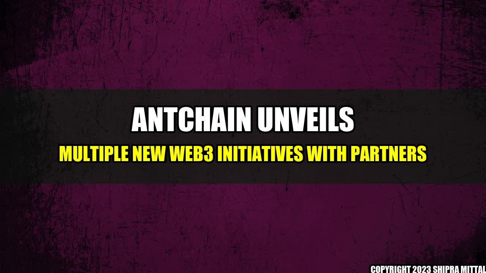

Transforming the Future with AntChain's Latest Web3 Initiatives

Once upon a time, businesses were built on trust and handshake agreements. But as the world became more complex, so did the business transactions, and thus the need for transparency and security grew. That's where AntChain's web3 initiatives come into play, helping businesses build trust, transparency and security in their transactions, and transforming the future of business, finance and more.
Concrete Examples of AntChain's Web3 Initiatives
- AntChain partnered with Chinese bank ICBC to launch a blockchain-based supply chain platform that ensures transparency, authenticity, and security of data throughout the supply chain process.
- AntChain collaborated with Chinese insulin producer Gan & Lee Pharmaceuticals to develop a blockchain-based system that ensures the authenticity and quality of insulin products.
- AntChain joined forces with Singapore-based blockchain start-up, DLT Labs, to develop a blockchain-based platform for cross-border trade finance that automates transaction processes and provides real-time visibility into the supply chain.
The Future of Business is Here: AntChain's Web3 Initiatives
Conclusion
- AntChain is leading the innovation in web3 initiatives by partnering with various companies to ensure transparency, authenticity and security of data.
- AntChain's blockchain-based platforms have the potential to revolutionize the supply chain processes and cross-border trade finance, thus helping businesses save cost and time.
- A future with AntChain's web3 initiatives will not only provide greater trust, transparency and security, but also pave the way for greater innovation and progress in various sectors.
Reference URLs and Further Readings
Hashtags and SEO Keywords
#AntChain #Web3 #BlockchainInitiatives #SupplyChain #TradeFinance #Innovation #Progress #Transparency #Security
Article Category
Technology
Akash Mittal Tech Article
Share on Twitter Share on LinkedIn